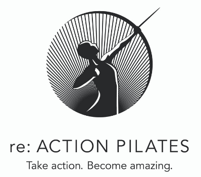

Classes
Observe & Learn
The Anatomy
Additional Resources
Pilates re:FORMER Class 1
Opening Movement
Leg & Footwork
Pelvic Press
Supine Abdominals
Feet in the Straps
Seated Mermaid
Roll Backs 1
Arm Work Forward
Arm Work Prone
Eve's Lunge
Closing Movement